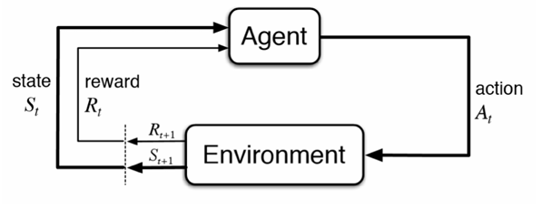

CMU Agents 2026 - Lec 1
AI Agents: Foundations, Capabilities, and System Design
AI agents are becoming part of everyday software development, research, customer support, and knowledge work. Coding agents can now modify repositories, run tests, interact with browsers, and recover from certain failures. However, building an agent that works reliably is much harder than connecting a language model to a few tools.
This lecture introduced the foundations of agent systems:
- What an agent is
- How agents use tools
- How the agent loop works
- Why current agents still fail
- The difference between model training and harness engineering
- The importance of safety, sandboxing, monitoring, and evaluation
- How the course will approach agent development
The central message is simple:
An agent is not just a language model. It is a system made up of a model, a harness, tools, memory, an environment, safety controls, and evaluation infrastructure.
Slide: Link Lecture: Link Readings: Toolformer, ReAct, Mini-SWE-Agent
Why AI Agents Matter
An ordinary language model produces text in response to a prompt. An agent can take actions in an external environment.
That difference changes the nature of the system.
A chatbot might explain how to modify a file. A coding agent can:
- Inspect the repository
- Locate the relevant file
- Modify the code
- Run tests
- Inspect failures
- Revise the implementation
- Report the result
This makes agents useful for tasks involving multiple steps, external state, and feedback.
Examples include:
- Debugging software
- Migrating code between programming languages
- Browsing websites
- Operating desktop applications
- Filing forms
- Managing customer-support workflows
- Performing research
- Monitoring systems
- Running experiments
- Automating repetitive business processes
However, autonomy also creates risk. An agent that can act can also make incorrect or destructive decisions.
A useful boundary exercise
Consider the following tasks:
| Task | Possible autonomy level |
|---|---|
| Diagnose a failing online store | Autonomous, ask first, or human-only |
| Draft and send an email to 50,000 customers | Usually ask first |
| Prepare and file a tax return | Usually ask first or human-only |
| Migrate a payments API from Python to Rust | Potentially autonomous with tests and review |
| Buy concert tickets | Potentially autonomous with spending limits |
| Adjust an insulin dose | Human-controlled or medically supervised |
The correct level of autonomy depends on:
- Consequence of failure
- Reversibility
- Cost
- Privacy
- Availability of reliable validation
- User expectations
- Whether a human can intervene in time
Trust is therefore not a cosmetic feature. It is a core system requirement.
What Is an AI Agent?
A classical definition from artificial intelligence describes an agent as something that:
Perceives its environment and acts upon that environment.

This definition remains useful for modern language-model agents.
An agent typically consists of: - An environment - Observations - Actions - A policy or decision-maker - A reward or success signal
A simplified formalization looks like this:
o_t = observation of the environment at time t
a_t = policy(o_<=t, a_<t)
s_(t+1) = Transition(s_t, a_t)
where:
- s_t is the current environment state
- o_t is the observation received by the agent
- a_t is the action selected by the agent
- policy (or pi) is the agent’s decision rule / strategy
- Transition (or T) is the environment transition function
- o_<=t is the history of all observations up to and including time t
- a_<t is the sequence of all past actions taken before time t
In a language-model agent, the policy is often implemented by prompting a model with:
- System instructions
- The user’s task
- Available tools
- Previous observations
- Previous actions
- Intermediate reasoning or planning state
Agent versus chatbot
A chatbot generally follows this pattern:
user message → language model → assistant responseAn agent follows a longer loop:
user task
↓
language model decides what to do
↓
tool call or external action
↓
environment changes
↓
new observation
↓
language model decides what to do nextThe model is only one component. The surrounding software determines how actions are executed, validated, recorded, and repeated.
Examples of Current Agent Capabilities
Computer-use agents
Computer-use agents interact with applications through:
- Browsers
- Screenshots
- Mouse actions
- Keyboard input
- Application APIs
- Structured user-interface state
A typical task might be:
Find a Thai restaurant in Pittsburgh with at least 200 reviews and a rating of at least 4.3.
The agent may:
- Open a browser
- Navigate to a restaurant website
- Enter a search query
- Inspect the results
- Filter by rating and review count
- Open a candidate page
- Return the result
This requires both reasoning and environment understanding. The agent must interpret the interface correctly and select appropriate actions.
Coding agents
Coding agents operate on repositories. They may:
- Create files
- Read source code
- Search for symbols
- Modify implementation
- Run tests
- Start applications
- Browse the resulting interface
- Diagnose failures
- Commit or push changes
A typical coding-agent trajectory might look like this:
Inspect repository
↓
Read relevant source files
↓
Form a hypothesis
↓
Edit implementation
↓
Run tests
↓
Inspect failure
↓
Revise code
↓
Run tests againOne important advantage of agents is that they can interact with the software they build. They do not need to stop after generating code. They can run the application, inspect logs, test user flows, and fix problems.
The Agent Environment
An environment is the external world in which the agent operates.
Examples include:
- A source-code repository
- A web browser
- A desktop application
- A database
- A cloud service
- A simulated game
- A scientific environment
- A customer-support platform
The environment has a current state. The agent receives observations of that state and takes actions that may change it.
Observations
Observations can include:
- User messages
- File contents
- Test results
- Shell output
- Screenshots
- Browser pages
- API responses
- Logs
- Database records
- Error messages
Actions
Actions can include:
- Replying to the user
- Editing a file
- Running a command
- Calling an API
- Clicking a button
- Sending an email
- Updating a database record
- Submitting a form
Rewards and success signals
Agents need some way to determine whether they succeeded.
Possible signals include:
- Unit tests passing
- A program compiling
- A benchmark score
- A successful API response
- A structured validation check
- A human approving the result
- An LLM judge evaluating the output
- User satisfaction
For software tasks, programmatic rewards are often available:
R = 1 if all tests pass, 0 otherwise
For open-ended tasks, success is more difficult to measure. The system may require:
- Human feedback
- An LLM-based evaluator
- Rubrics
- Domain-specific validators
- Multiple independent checks
Tools and Tool Calls
A tool is an interface that allows the model to interact with its environment.
A tool specification usually includes:
- Tool name
- Natural-language description
- Parameter schema
- Return-value format

For example:
{
"name": "read_file",
"description": "Read the contents of a file",
"parameters": {
"type": "object",
"properties": {
"path": {
"type": "string",
"description": "Path to the file"
}
},
"required": ["path"]
}
}The model receives a representation of this specification in its context. It then generates a tool call.
A structured tool call might look like this:
{
"name": "read_file",
"arguments": {
"path": "src/app.py"
}
}The harness then:
- Parses the model output
- Validates the tool name
- Validates the arguments
- Executes the tool
- Captures the result
- Adds the result to the conversation history
- Sends the updated context back to the model
Alternative tool interfaces
Tools do not have to be represented as JSON. Other options include:
- Python function syntax
- Bash commands
- A domain-specific language
- XML
- Structured tokens
- Grammar-constrained output
For example, an agent might call a tool using Python-like syntax:
read_file("src/app.py")Or through a shell command:
cat src/app.pyThe best interface depends on the model, the task, and the required level of validation.